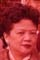

|
余中一 Yĩ Jüng Yīt Yú Zhōngyī |
||||||||
|---|---|---|---|---|---|---|---|---|
|
余和賢 = 譚翠悟 Yĩ Võ Yẽn = Hâm Tuï μ Yú Héxián = Tán Cuìwù Yue Woh Yin [Wah Yan Yee] (1895-1964) = Taam Chui Ng [Choi Eng Tam] (1897-1984) |
||||||||
|

(1)余秀琴 (余姚娟)= 劉耀華 = (2)黃寶珍 (1) Yĩ Xiü Kĩm (Yĩ Yẽl Gün) = Liũ Yèl Vã (1) Yú Xiùqín (Yú Yáojuān) = Liú Yuèhuá (1) Fannie Yee = Henry Yee (2) Jean Yee (Huáng Bǎozhēn) = Henry Yee |
余振禮 名銳康 = 雷素珍 Yĩ Yuì Höng = Luĩ Xü Jïn Yú Zhènlǐ [Ruìkāng] = Léi Sùzhēn Yui Hong Yee (3/18/1920-9/6/2007) = So Chun Louie Yee (4/4/1923-3/8/2009) |
|||||||
|
劉素妤 Liũ Xü Yĩ Liú Sùyú Susan Yee = David King |
劉惠光 = 李洞蘋 Liũ Fì Göng = Lī Ùng Pẽin Liú Huìguāng = Lǐ Dòngpíng Stephen Fay-Kwong Yee = Lucy Lee |
余碧妃
Yĩ Bēik Fǐ Yú Bìfēi Pikfei Yu Chin |
余綺輝 Yĩ Yī Fï Yú Qǐhuī Yee Fay Yee |
余碧茵 Yĩ Bēik Yǐn Yú Bìyīn Beck Yan Yee |
余啟輝 Yĩ Kāi Fï Yú Qǐhuī Kai Fay Yee |
余啟超 Yĩ Kāi Chël Yú Qǐchāo Kai Cheou Yee |
||
|
David King Jr. |
Todd King |
Kathryn Yee | Karen Yee | |||||
Note: 余一中 Yú Yīzhōng was the father of 余和賢 Yue Woh Yin, whose older adopted brother was 余和勝 Yú Héshèng. The final resting place of 余和賢 Yue Woh Yin, 譚翠悟 Taam Chui Ng, 余銳康 Yui Hong Yee and 雷寶素 So Chun Yee is Fort Lincoln Cemetery, Brentwood, Prince George's In Maryland.